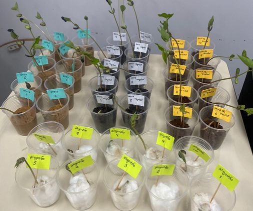
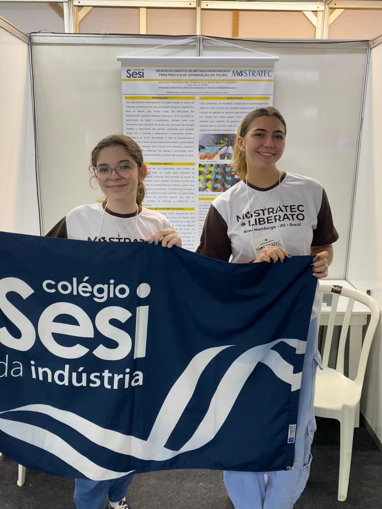
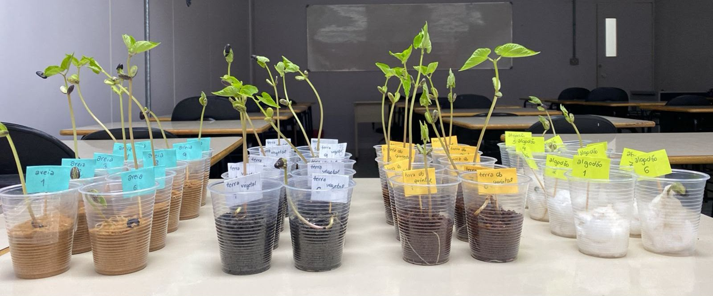

Development of a Standardized Method for Conducting Bean Germination Experiments
When I started my high school, my biology teacher invited me to develop a project about helping the elementary teachers to find the best substrate to grow beans in a short time to demonstrate in class. The soil substrates analyzed were sand, cotton, fertilizer and Paraná's common soil.
Observing the beans grow during one month, we concluded that each substrate works best for a different situation: if the teacher wants to demonstrate the roots, sand is the best option. Now, if the teacher wants to demonstrate the stem or leaves, fertilizer or common soil are great options. Moreover, if one wants to do the experiment without getting messy, they can use cotton.


This was the first science project of my life! Being introduced to science with this project increased my interest in studying more than I could have imagined! With the project, I won some awards during the fairs I went to, and also I had the opportunity to participate in the 39th MOSTRATEC Science fair, the biggest science fair in Latin America!
